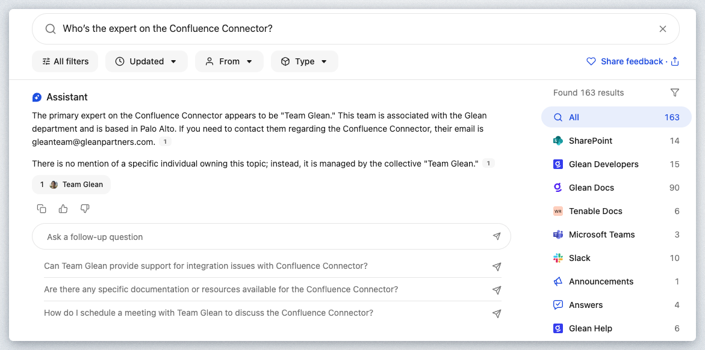
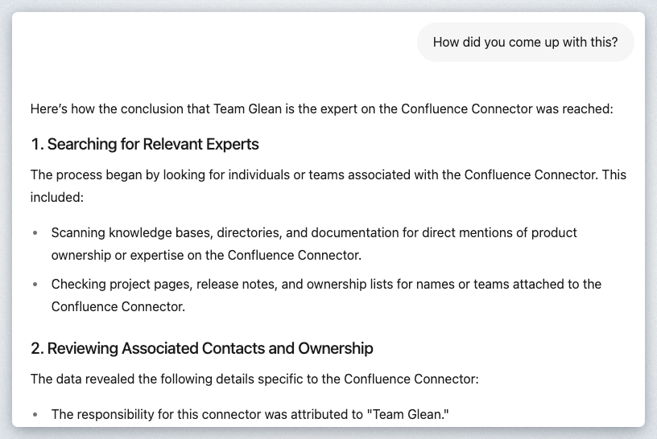

In this hands-on lab, you will explore Glean's Enterprise Search platform and discover why it has become the world's leading enterprise search engine. You'll gain practical experience with Glean's core search capabilities that serve as the foundation for advanced AI-powered features.
Why Enterprise Search Matters
Enterprise search forms the backbone of effective generative AI implementation. Before any AI assistant can provide accurate, relevant responses, it needs access to high-quality, well-indexed information. Glean's superior search and retrieval capabilities enable organizations to unlock the full potential of generative AI tools like the Glean Assistant, which you'll examine in the next lab session.
Key Features You'll Explore
During this lab, you will work with Glean's search interface to understand its core components:
- Smart Search Box: Test the autocomplete functionality that provides real-time suggestions as you type
- Results Display: Navigate through search results and examine how Glean presents relevant documents and information
- Customization Options: Explore theme settings and interface personalization features
- Security Integration: Understand how authentication mechanisms ensure secure access to organizational content
By the end of this session, you'll understand how Glean's search platform creates an efficient, tailored search experience that meets your organization's specific requirements and prepares the groundwork for AI-enhanced productivity tools.
If you're already logged in, feel free to go directly to the next step, Execute your First Search or follow the steps below to login first.
Navigate in your browser to https://app.glean.com which will re-direct you to the Glean login page.

Enter the email address provided for you by the Workshop Moderator. First enter the email address in the Work email field and click the Log in button.
You will be presented with a screen similar to the following. Enter the password provided by your Workshop Moderator and click the Sign in button.

Once completed, you will be redirected to the Glean Search page.

If you don't see the Glean Search page of the Home page, click on the logo of the Home icon in the top left corner of the screen.

Congrats! You have successfully completed this step of the guide. The single sign-on authentication process through Okta, demonstrating Glean's seamless integration with your organization's identity management system. This streamlined login experience eliminates the need for additional credentials while ensuring secure access to enterprise resources. Now that Glean has authenticated your identity, the platform can personalize your search experience, apply appropriate access controls based on your permissions, and deliver results tailored to your role and responsibilities within the organization. This identity-aware foundation enables Glean to provide you with relevant, authorized content while maintaining the security standards your enterprise requires.
When you land on the homepage of the Glean Platform, you will be presented with a "Google-Like" interface for querying the indexed corpus of knowledge within the Glean Platform. Glean is a personalized experience where you will also see announcements that have been created for either your team or the company as a whole, recent documents you may have been working on, your calendar, as well as documents you've been collaborating on.
Glean's advanced search filters enhance the precision and relevance of search results. Click on the icon ⓘ to find the advanced search details as shown.

Users can utilize quotes around specific words or phrases to ensure their presence in the search results, enhancing the accuracy of searches.

Click in the Search box and notice that an Autocomplete box opens up with past searches as shown:

Slowly type "salesforce" one letter at a time to see the Autocomplete feature in action.

Once satisfied, either click the "salesforce" search link or hit enter on your keyboard.
You'll be presented with the SERP (Search Engine Result Page) similar to the following:

The SERP page provides many features such as:
- The documents returned in order based upon relevancy
- List of indexed sources on the right side including how many documents were found in each source
- Filtering mechanisms for date, authors, and data types.
You can of course click any document to be redirected directly to the document from its datasource. Glean does not create a copy of the documents, it only stores an index and allows the user to link directly to the document within its native source.
Click on Glean Docs in the list of data sources on the right.

Notice how the search results are just showing documents from the Glean Docs website now. What started as 2,000 results is now filtered down to 269 results. Next, click on the Type filter under the search box.

Since the items in Glean Docs are just Documents, that is the only filter available. Click on SharePoint now.

You'll notice the filters under the Search Box have changed. Now click on the Type filter again and you will notice PDF and Spreadsheet are available because SharePoint can contain multiple document types.

Let's go back to the default search results and wrap up this section. Click on All on the list of indexed sources.

Hover over any of the documents and notice how a "Summarize" button shows up.

Click the "Summarize" button when you hover over the "Salesforce Connector Overview | Glean Help Center" Glean Developers document. A popup window will present itself similar to the following:

As you can see, a summary of the document is presented as well as the Glean Assistant conversation chat window to ask any questions you may have concerning this document.
Tight integration between the search engine results page (SERP) and the Glean Assistant drives deep value for Glean Customers. We'll learn more about the Glean Assistant in an upcoming section and workshop module.
If you wish, feel free to ask a followup question of this document. Maybe something like:

Close the popup window by clicking the X button in the top right of the popup.

Glean doesn't restrict you to just searching for documents and answers through the web portal. Let's see how you can "Glean" from anywhere.
In the SERP, click the "Salesforce Connector Overview | Glean Help Center" document as shown below to open it in a new tab.

You have been redirected to Glean's Public Help Docs on https://docs.glean.com. Specifically the help document surrounding the Salesforce Connector. You can of course read this document as necessary. But the purpose of having you accomplish this is to show another feature of the Glean Platform that is affectionately known as "Glean Where you Work"
Having ready access to your company knowledge during your normal workflow can drastically enhance your productivity. Glean Customers will install a plugin/extension to their browser(s) in order to be able to popup Glean literally at their fingertips.

If you have the Glean Extension installed you can press Cmd+J (Mac) or Alt+J (Windows) to popup a sidebar with the full power of the Glean Platform.
Since most of you will not have this installed, you can either install it if you have time and the privilege to do so on your laptop, or you can view the screenshot below.
Here is a screenshot of the sidebar that pops up when you have the Glean Extension installed in your browser.

As you can see above you are able to see a summary of the document/page you have open, search the entire corpus of knowledge, and/or see recommended documents that are related to the content on the current page.
In addition to the browser extension, an iOS and Android application are also available in their respective app stores.
Let's go ahead and navigate back to the browser tab with the Glean SERP from the previous step. We're going to continue to dive deeper into the SERP and the options available to users.
Glean Assistant is a secure, enterprise-grade digital workplace assistant designed to enhance organizational productivity by utilizing Generative AI capabilities. It operates similarly to ChatGPT but is tailored specifically for your organization, taking into account data access permissions and delivering personalized answers based on the company's internal knowledge.
In the Search Bar enter the following (It is formulated into a question on purpose):
As you can see the SERP responded the same as it did earlier with a series of documents in relevant order. However, since you entered a "question" into the Search Bar, it also popped the Glean Assistant as the top result in order to answer your question in Natural Language as shown:

Expand the Glean Assistant answer by clicking the More button at the bottom of the Assistant Card.

You can now see the full Glean Assistant answer and are able to fully interact with the Assistant directly from the SERP. You can provide feedback on the generated answer, ask follow-up questions/clarifications as necessary, and see citations as you learned in the previous lab.

We'll cover the Glean Assistant in more detail in the next workshop module. For now, go ahead and move on to the next step.
In this section, let's learn more about the options that are available for the items in the SERP. Go ahead and run a new search and enter the following into the Search Box:
An Answer Card response is the first Search Result as shown:

Click on the 3 dots on the top right of the card.

This menu is available for all the results in the SERP. Let's run through each of the different options below.
Copy Link - Just as the name implies, this action allows you to copy the link to the item to the clipboard.
Pin to top - A new window will pop up that will allow you to pin this result to the top based on a specific search query.

Add to Collection - Collections are an easy way to organize related documents across all your tools by a single topic. You can think of them as a way to curate a set of documents for other teammates to find and use easily.

Create Go Link - Go Links are a way to create short memorable links for important URLs at your company in the form of go/link. Go Links act like a mental bookmark: once you see it or hear it, you immediately know how to access it, both now and in the future.

Create Answer - Answers are bite-sized chunks of information you create in Glean to answer common questions your teammates - and future teammates - might have. This will show up for content that isn't already an Answer.

Request Verification - When you're using Glean to search for documents across different tools in your company, Glean's Verification feature makes it easy to know if a document is verified. If the document is a duplicate, incorrect, incomplete, outdated, or other; you can ask for someone to verify it.

Verify or deprecate - If you are the owner of an item in the search results, you can verify a document to let other users know that it is up to date. Verified documents will show up with a green shield in the search results.

As users search for content and interact with the different options available, this provides signals back to Glean that help improve the search results as well as Glean Knowledge Graph.
The Glean Knowledge Graph is a powerful tool that forms the backbone of Glean's enterprise search platform, designed to provide users with the most personalized and relevant results for their queries.
The Glean Knowledge Graph serves as the foundation of Glean's enterprise search platform, operating on a real-time model of your enterprise's indexed information. This sophisticated system enables highly personalized and contextually relevant search results by understanding the relationships between content, people, and activities within your organization.
The Knowledge Graph is built on three fundamental pillars that work together to create a comprehensive understanding of your enterprise data: content, people, and activity.

We'll go into more detail about the Knowledge Graph as you work through the Workshop modules.
Oftentimes you would like to find out who is considered an expert in a certain area or topic within your organization. This type of activity typically involves either asking somebody else who hopefully knows the answer, or by attempting to figure it out by reading a bunch of content on the topic.
Since Glean IS reading your entire company content and is staying up to date with changes, it knows who the experts are in your company. In the Search Box enter the following:
You should see results similar to the following:

As you can see the user "Team Glean" is the expert on the Confluence Connector? If this were a production instance, it would be a real user within your organization. But, how did the platform figure out that Team Glean is the expert?
As mentioned above, Glean is reading your entire company knowledge and learning who is creating/modifying content and correlating that information with the context of the content itself. Glean also knows where the user(s) are within the company's hierarchy.
If you ever want to understand a bit of "why" Glean has responded in a certain way, or in this case, expert identification. Go ahead and ask Glean in the "Ask a follow-up question" box:


This lab provided a comprehensive overview of Glean's core functionality as a leading enterprise search engine, covering multiple key areas that demonstrate its value in the workplace. Through hands-on exploration, you learned to navigate the Glean Search Page, execute searches, and interact with results while experiencing advanced features like autocomplete, secure access, and customizable themes.
The integration of Glean Assistant significantly enhances the search experience by enabling users to quickly summarize documents and ask follow-up questions, which improves both the efficiency and accuracy of information retrieval. The lab demonstrated how the Glean browser extension brings company knowledge directly into users' workflows, boosting productivity by delivering relevant information precisely when and where it's needed.
Additionally, you explored expert search capabilities that help identify subject matter experts within your organization based on their content creation and modification activities. While not covered in this workshop, Glean also offers automated answer and glossary term creation, adapting to an organization's unique terminology and requirements to provide precise information without requiring significant manual effort.
Together, these features showcase how Glean transforms enterprise search from a basic query tool into an intelligent knowledge platform that seamlessly integrates with daily work processes.